Visit our Video Page.
Visit our
YouTube channel.
Visit our Video Page.
Visit our
YouTube channel.
The multi-region display allows users to "slice" their track-viewing experience into a variety of different modes that focus the display on certain features: exon-only, gene-only, or user-defined BED coordinates. Only the portions of track annotations that fall within these displayed regions are shown; extraneous intergenic, intronic and otherwise unwanted regions are hidden from view.
For human assemblies hg17 and later, the multi-region view also supports the replacement of a section of the reference genome with an alternate haplotype chromosome. This allows the user to view annotations upstream and downstream of the haplotype sequence, and visualize the haplotype in the general context of the reference chromosome.
Using the multi-region display, one can:
Follow these steps to activate and configure multi-region view in the Genome Browser.
Step 1. Pick a genome assembly and region
Open the Genome Browser tracks display to a region of interest within a standard genome assembly, or
open a custom region within an assembly hub.
Step 2. Open the multi-region view configuration window
Click under the tracks display to open the multi-region
configuration window.
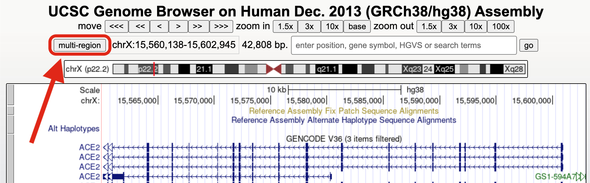
Step 3. Configure the multi-region view
By default, the Exit multi-region mode button is selected. This button returns the
display to the traditional view.
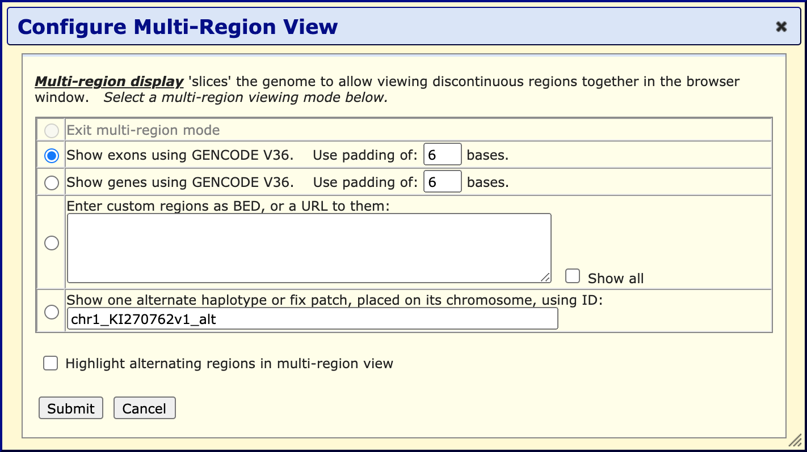
To activate a multi-region view, click one of these options:
Click to save your changes and return to the Genome Browser tracks display.
Here is a view of the Genome Browser with the "Show exons" and "Highlight alternating regions" options selected:
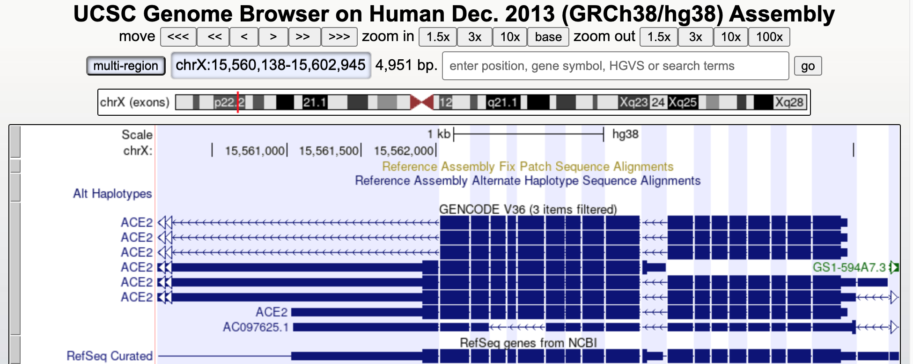
Navigation and display
With a few exceptions, most browser navigation and display features function the same in both
multi-region and single-chromosome modes, including zooming in and out, reversing and resizing the
view, highlighting and zooming to a selected region, and track search. Searching and zooming
conventions differ when displaying custom BED regions. See About Custom
Regions for more information.
The exon-only view shows only those bases and annotations that fall within an exon or padding region. Bases and alignments within intronic and intergenic regions are removed from the display.
The exon-only view "virtual chromosome" is constructed of all the exons present in the gene track specified in the multi-region configuration window. Exon "slices" are visually separated by blocks of intronic or intergenic bases, the size of which are set by the padding field. This designates the padding on both sides of an exon, and therefore is additive, e.g., a padding size of 6 will result in a 12-base space between exon slices:
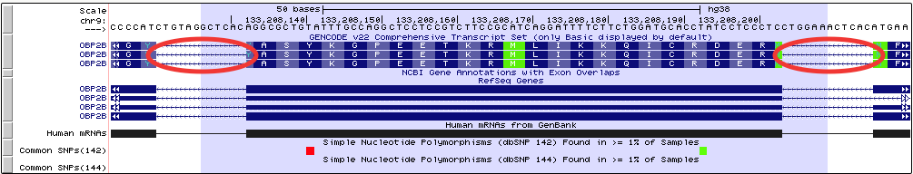
If the gene track used to compute the slicing is a super track or contains other transcripts, only the longest exon will be used to determine slicing, regardless of whether or not they are in the same transcript. See Example 1 for more information.
The gene-only view displays the bases and annotations that fall within the coordinates of a gene, but hides all of the intergenic bases except those used for padding (Example 2). As with exon-only mode, the padding field sets the number of intergenic bases displayed to visually separate each gene slice.
Because genes and alternate transcripts often overlap by a few bases, the windows created by the gene-only (and exon-only) mode may sometimes merge together. Reducing the number of padding bases may increase the number of alternate regions by allowing less intergenic space between genes. However, this overlap is a common feature for most of the Genome Browser gene sets, and should be no cause for concern.
The custom regions mode allows user-specific modeling of genomic regions by either entering them into the text box, or linking to a BED file. Typically when a BED file is loaded into the browser, the entries are displayed in the tracks window in order of chromosomal location, regardless of the order in the file. When the multi-region view option is selected, the BED file entries are displayed in the same order they appear in the file. This feature can be used to manipulate the display of other annotations in the browser window, for example to duplicate a display region, reorder the exon display within a gene, or display regions from 2 different chromosomes side-by-side. Example 3 demonstrates the importance of ordering entries within a file.
Although all types of BED files are supported, only the information from BED 3 or BED 12 files is relevant to the display. Like BED custom tracks, comments are supported in the BED files used by multi-region mode. Comments are included at the top of the BED file, preceded by "#". The supported comments are:
Here is an example of a BED3 file with comments:
#database hg38
#shortDesc Example of a short description
#padding 6
chr1 pos1 pos2
chr2 pos1 pos2 The Genome Browser search mechanism functions differently when using custom BED regions in multi-region view. When searching for a term or position, the browser first searches for the term within the BED-defined regions. If the item is found, the browser display will shift to that location.
If the term is not found within the BED-defined regions, but is found elsewhere, the browser will display a message asking if you would like to return to a default view at that location. If you prefer to return to your custom region instead, click . Otherwise, click "here" to return to the default view.
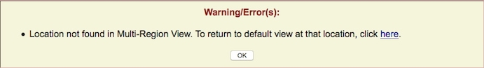
If the term is not found at all in the assembly, an error message will display.
When scrolling or zooming while viewing regions from a custom BED URL, the range is restricted to the BED-defined regions. Although you can still zoom in to single base resolution, the outward zoom is limited to the extent of the defined regions. Scrolling upstream and downstream is also limited to the BED-defined range.
An additional viewing mode is available on human assemblies hg17 and later: showing an alternative
haplotype placed in its chromosomal context (Example 5). The haplotype is
specified by entering its ID in the form chr_name_alt in the configuration window. To view
the list of haplotype IDs for a given assembly, go to
http://hgdownload.gi.ucsc.edu/goldenPath/$db/bigZips/$db
.chrom.sizes,
where $db is the human assembly name (e.g., hg38, hg19, hg18 or
hg17).
Alternatively, haplotypes can be viewed using the Alt Map... track in the Mapping and Sequencing group. Open the track and navigate to the haplotype of interest in the track window. Click on the haplotype to display its details page, then click the link Show this alternate haplotype placed on its chromosome.
Visit our Video Page.
Visit our
YouTube channel.
Visit our Video Page.
Visit our
YouTube channel.
Visit our Video Page.
Visit our
YouTube channel.
This screenshot shows the exon-only view for the SOD1 gene in human assembly hg38. The third "exon" from the left falls within the intron of the actual SOD1 gene, but is shown as an exon because it is part of the GENCODE v22 super-track.
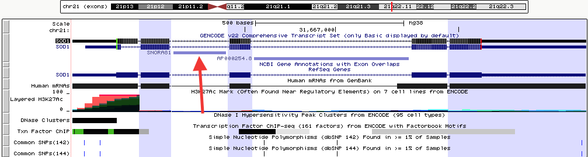
Click here to view this example in the Genome Browser. To quickly exit multi-region mode and return to the default single chromosome view, use the keyboard shortcut "d v".
This example illustrates how intergenic regions are removed from the default browser tracks view in gene-only mode. The displayed region of the X chromosome on the human hg19 assembly consists of three genes (DKC1, MPP1, and F8) with varying amounts of intergenic space separating them. The first screenshot shows the standard browser display of the gene track in "single chromosome" view. Compare it with the second screenshot, which shows the same region in gene-only mode with the padding set to 6. (Click here to view this example in the Genome Browser.)
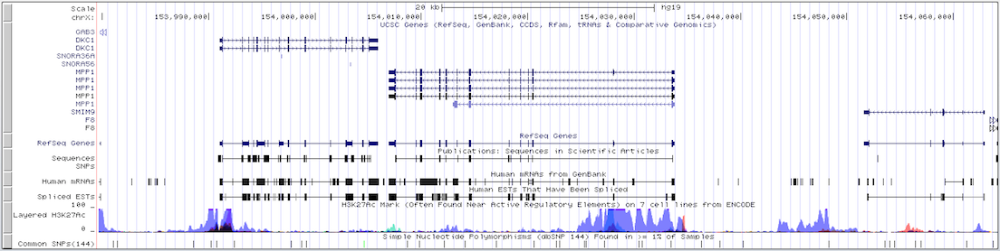
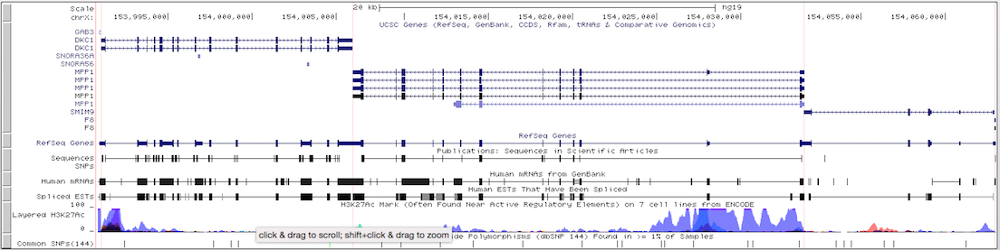
To quickly exit multi-region mode and return to the default single chromosome view, use the keyboard shortcut "d v".
Here is an example BED file for mm10 that contains a list of exon positions for the Pax9 gene. If this file is loaded into the browser as a custom track without turning on multi-region mode, the blocks display in order of genomic position, not in the order they are specified in the file:
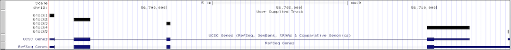
However, if multi-region mode is turned on after loading a custom track, the blocks display in the order they are listed in the BED file, rather than in genomic position order. This in turn affects the display order of other features in this view, in this case the display order of the exons in Pax9. This feature can be used to manipulate the display of other annotations, for example to allow the visualization of centromeric regions or viewing the same gene twice within the same window to compare annotations in a separate region.
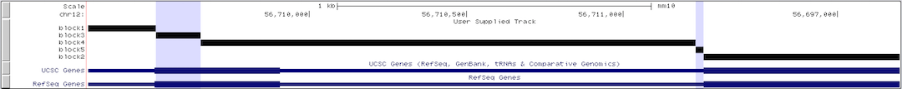
Click here to view this example in the Genome Browser. To quickly exit multi-region mode and return to the default single chromosome view, use the keyboard shortcut "d v".
The following BED file utilizes BED12 format to display two regions from two different chromosomes, chromosome 22 and chromosome 21, side-by-side in the browser tracks window, along with human genes POTEH, CECR2, USP25 and CHODL.
chr22 15690026 17558149 chr22 960 + 15690026 17558149 0 2 31497,81057, 0,1787066
chr21 15730025 18267373 chr21 960 + 15730025 18267373 0 2 148887,22540, 0,2514808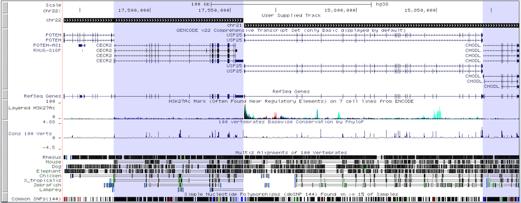
The multi-region display utilizes the data in the blockStarts and blockSizes fields of the BED file to draw its regions, allowing for even more customization of the Genome Browser display.
Click here to view this example in the Genome Browser. To quickly exit multi-region mode and return to the default single chromosome view, use the keyboard shortcut "d v".
This example shows how the human hg38 haplotype chr1_KI270762v1_alt fits onto chromosome 1. Note that annotations from the standard browser display do not extend into or out of the haplotype region, since haplotypes are annotated separately from regular chromosomes.
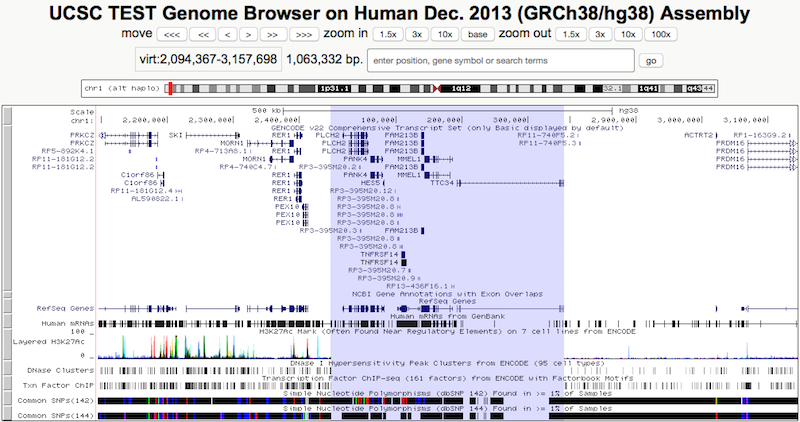
Click here to view this example in the Genome Browser. To quickly exit multi-region mode and return to the default single chromosome view, use the keyboard shortcut "d v".